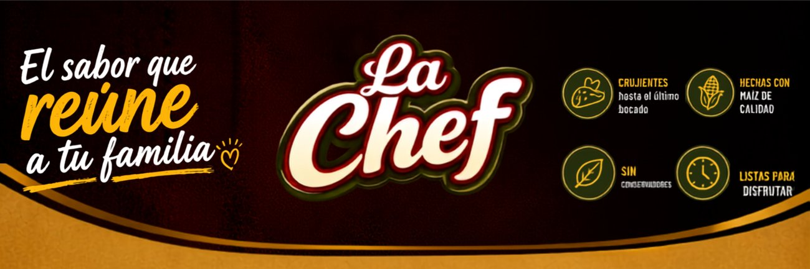

Marca activa · Dirección de marca
Ver proyecto →
La Chef
La marca de alimentos donde actualmente lidero el desarrollo de marca y la expansión comercial en Comayagua y Siguatepeque.
Necesidad
Comunicar cercanía familiar y calidad de producto en una sola pieza visual.
Qué hice
Dirección de marca, negociación comercial con distribuidores y diseño de piezas publicitarias con paleta cálida, tipografía manuscrita y sistema de íconos de atributos.